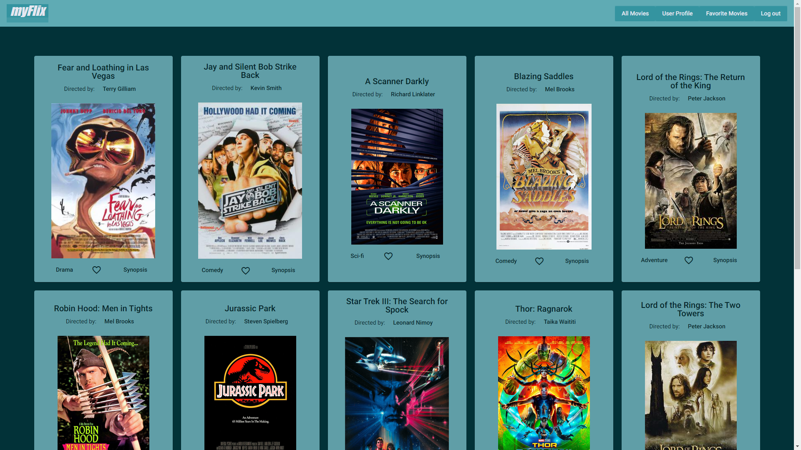
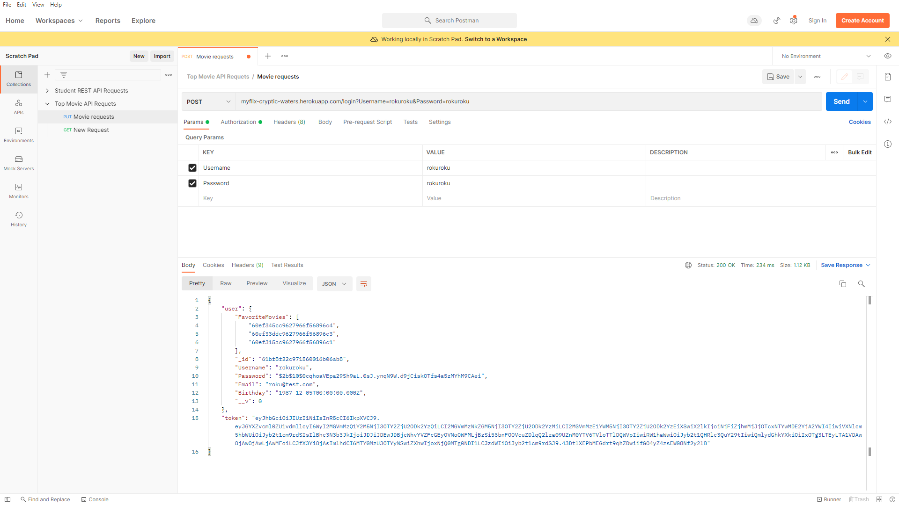
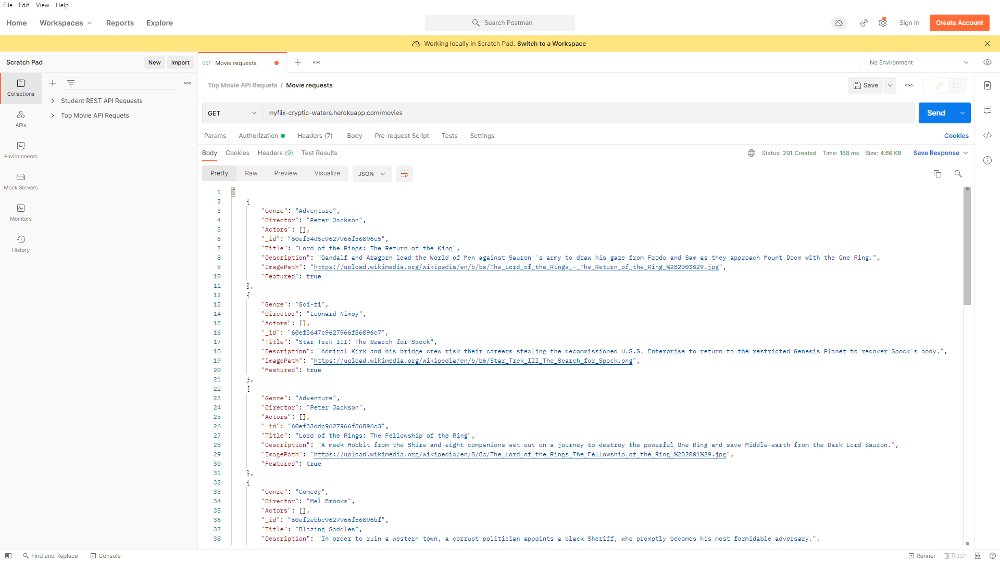

myFlix

myFlix is a web app, build with the MERN and MEAN tech stacks. It allows a user to view information about a movies, directors, and genres. A user is able to create an account and make a list of their favorite movies. The user is also able to edit their user information. This app was developed as a learning exercise for my course on CareerFoundry.com. It was built to showcase my skills as a full-stack developer that can build both the client-side and server-side of a project.
{kind=link}
A RESTful API was built with Node.js and Express to interact with MongoDB. The data from the API is accessed with GET, POST, PUT, and DELETE HTTP methods. Movie data is provided by the API in a JSON format. JavaScript Web Tokens are used for user authentication when a user logs into their account.
 {kind=link}
{kind=link}
Postman was used to test the HTTP methods to make sure the API was functional. The client-side was developed to be a single-page web app. One version utilizes React and React-Redux while the other uses AngularJS. Its purpose is to provide a user with an interface for interacting with the database from a single view. It is where a user can login, view the movies in the database as well as the directors and genres, and make a favorites list or view their profile.
This made for some interesting challenges while learning, however most were overcome by simply reading documentation. The issues that gave me the most trouble stemmed from the routing of information from the database to being displayed for the client-side. Routing was an issue for both the React and Angular versions I built. It took a lot of reading and tweaking code to finally be able to move past it, but it took far longer than expected to do as well.
The project was able to be finished on time and met expectations. I was able to learn some new frameworks and libraries that I will be able to use in future projects. The experience with the routing, and how to use it properly, will be very helpful when it comes to developing future projects as well.